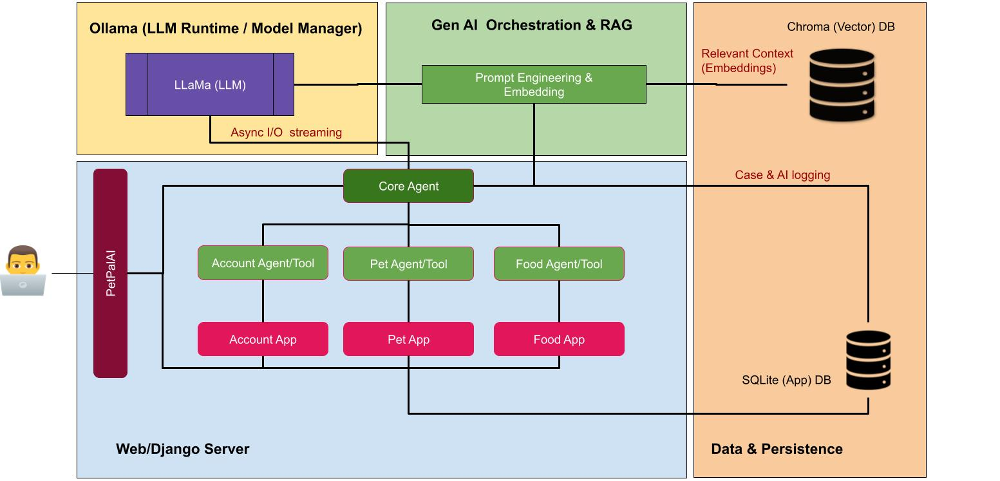

Overview
PetPalAI is a scalable, modular Django-based GenAI web application designed for pet owners to manage all pet-related information in one place. It leverages LLMs for food label extraction, integrates user/pet management, and provides AI-powered recommendations.
High-Level Architecture
Tech Stack
üêç Python / Django
ü߆ Ollama LLM
üìä Pandas, NumPy
üóÑ SQLite → scalable to Postgres
üåê HTML/CSS/JS Frontend
Key Features
üçñ Food Analysis ‚Äì upload labels → AI extracts nutrition info.
ü§ñ AI Agents (in progress) ‚Äì multi-step workflows like
“Set up my new pet account” via natural language.
üêæ Pet Profiles (in progress) ‚Äì medical history, vaccinations, appointments.
üìä Reports (future) ‚Äì health & diet trends.
Demo
Watch a quick walkthrough of PetPalAI:
Agentic AI Setup
- Use natural language to set up accounts, register pets, and get food nutrition info.
- Organization can connect agents to implement Agentic AI/workflows
- Responsible AI (case documentation), and human in loop.
RAG, OCR utilization for structure and unstructured data
- Stored ingredients, pro and cons in Vector DB to help pet owner find best pet food.
- Organizations can store their domain/company specific data to generate content.
- Utilized Optical Character Recognition (OCR), Retrieval-augmented generation (RAG).
Multi-Modal LLM (Vision) Integration for OCR
- Performance Focus: Utilize Python-based OCR (e.g., Tesseract, EasyOCR) as the primary engine, monitoring confidence scores to ensure fast, lightweight text extraction.
- Robustness Focus: Trigger a multi-modal LLM (Vision-Language model) for semantic re-evaluation when OCR confidence falls below a defined threshold, ensuring higher accuracy on complex or noisy inputs.
- Cost Optimization Focus: Invoke the multi-modal LLM selectively — only when the baseline OCR fails or yields uncertain results — minimizing API and compute costs.
Outcomes & Impact
- Demonstrates LLM orchestration + Django modular design, OCR, RAG.
- Showcases AI integration into practical, real-world use cases.
- Serves as a demo project for AI leader interviews.